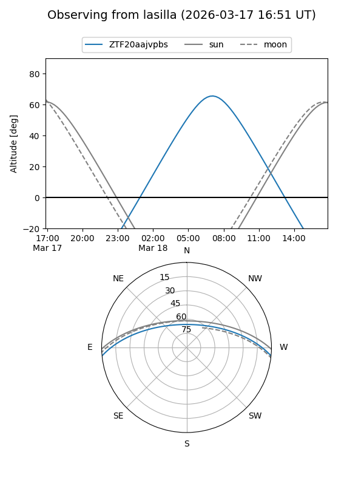
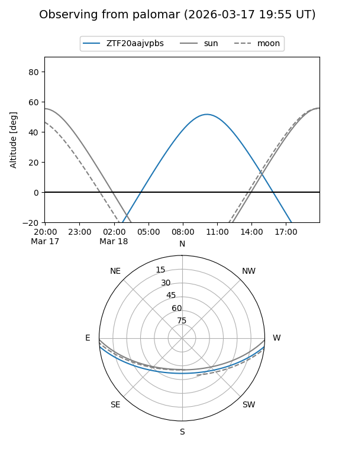

ZTF20aajvpbs
Target ZTF20aajvpbs at 2026-03-17 13:15
Aliases and brokers:
FINK: link
Lasair: link
ALeRCE: link
alt names
ZTF20aajvpbs (ztf,fink_ztf)
Coordinates:
equatorial (ra, dec) = 210.4700,-4.77963
equatorial (HMS+DMS) = 14:01:52.81,-04:46:46.67
galactic (l, b) = (333.6574,+53.83633)
Flags:
Photometry:
last ztfg=18.99
1 ztfg detections
Lightcurve
Visibility


Additional plots